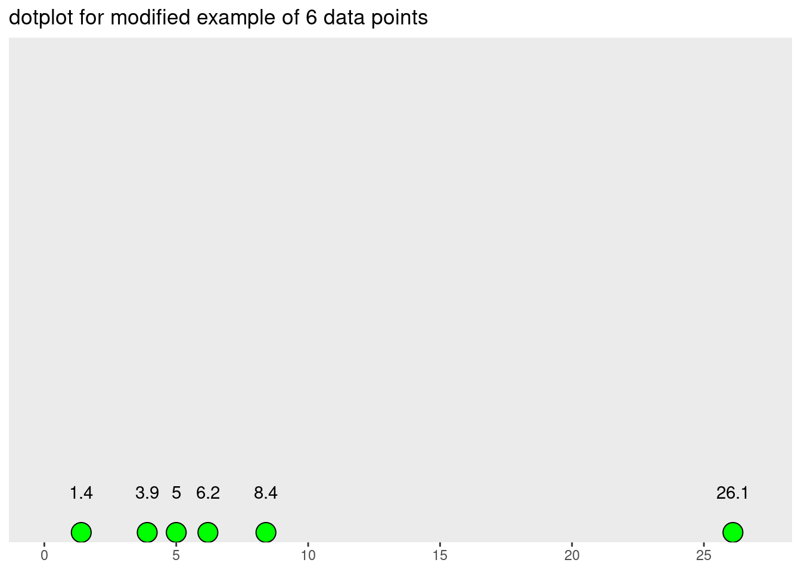

R Code for JB Statistics Video Lessonlibrary(tidyverse)
library(knitr)
library(kableExtra)# sample of 6 observations
sample6 <- c(1.4, 3.9, 5.0, 6.2, 8.4, 14.1)
glimpse(sample6) num [1:6] 1.4 3.9 5 6.2 8.4 14.1# guinea pig survival times
gp <- read_csv("https://raw.githubusercontent.com/STAT-JET-ASU/Datasets/master/JBStatistics/jbstatsguineapigs.csv")
glimpse(gp)Rows: 125
Columns: 2
$ group <chr> "control", "control", "control", "control", "control", "c…
$ survivaldays <dbl> 18, 36, 50, 52, 86, 87, 89, 91, 102, 108, 114, 114, 115, …(xbar_manual <- sum(sample6) / length(sample6))[1] 6.5(xbar <- mean(sample6))[1] 6.5(x_sorted <- sort(sample6))[1] 1.4 3.9 5.0 6.2 8.4 14.1(xmed <- median(sample6))[1] 5.6# https://ggplot2.tidyverse.org/reference/geom_dotplot.html
# https://ggplot2.tidyverse.org/reference/scale_continuous.html
# https://ggplot2.tidyverse.org/reference/labs.html
# https://ggplot2.tidyverse.org/reference/geom_text.html
# https://ggplot2.tidyverse.org/reference/theme.html
# https://personal.sron.nl/~pault/#sec:qualitative
dot1 <- ggplot(NULL, aes(x = sample6)) +
geom_hline(yintercept = 0) +
geom_dotplot(binwidth = 1,
dotsize = 0.5,
color = "black",
fill = "#DDAA33") +
geom_text(aes(x = sample6, y = 0.1),
label = sample6) +
geom_segment(aes(x = xbar, xend = xbar, y = -0.2, yend = 0),
arrow = arrow(length = unit(0.3, "cm")),
color = "#BB5566") +
geom_text(aes(x = xbar, y = -0.25),
label = paste("mean = ", xbar),
fontface = "italic",
color = "#BB5566",
hjust = 0) +
geom_segment(aes(x = xmed, xend = xmed, y = -0.2, yend = 0),
arrow = arrow(length = unit(0.3, "cm")),
color = "#004488") +
geom_text(aes(x = xmed, y = -0.25),
label = paste("median = ", xmed),
fontface = "italic",
color = "#004488",
hjust = 1) +
scale_x_continuous(limits = c(0, 27),
breaks = seq(from = 0, to = 27, by = 1)) +
scale_y_continuous(breaks = NULL) +
labs(title = "dotplot for example of 6 data points",
x = NULL,
y = NULL) +
theme_bw() +
theme(panel.grid.minor = element_blank())dot1sample6mod <- c(sample6[1:5], 26.1)
glimpse(sample6mod) num [1:6] 1.4 3.9 5 6.2 8.4 26.1(xbar_mod <- mean(sample6mod))[1] 8.5(xmed_mod <- median(sample6mod))[1] 5.6dot2 <- ggplot(NULL, aes(x = sample6mod)) +
geom_dotplot(binwidth = 1,
dotsize = 0.75,
fill = "green") +
scale_x_continuous(limits = c(0, 27),
breaks = seq(from = 0, to = 25, by = 5)) +
scale_y_continuous(breaks = NULL,
expand = c(0, 0)) +
labs(title = "dotplot for modified example of 6 data points",
x = NULL,
y = NULL) +
geom_text(aes(x = sample6mod, y = 0.1),
label = sample6mod) +
theme(panel.grid.major = element_blank(),
panel.grid.minor = element_blank())dot2
ggplot(filter(gp, group == "treatment"), aes(x = survivaldays)) +
geom_histogram(breaks = seq(from = 0, to = 600, by = 50),
color = "darkgray",
fill = "lightblue") +
labs(title = "Survival times of 60 guinea pigs after being infected with tuberculosis",
x = "Lifetime (days)",
y = "Frequency") +
theme_bw()ggplot(gp, aes(x = survivaldays)) +
geom_histogram(breaks = seq(from = 0, to = 800, by = 50),
color = "darkgray",
fill = "lightblue") +
labs(title = "Survival times of guinea pigs",
subtitle = "control group vs. treatment group infected with tuberculosis",
x = "Lifetime (days)",
y = "Frequency") +
facet_grid(group ~ .) +
theme_bw()gpstats <- gp %>%
group_by(group) %>%
summarize(xbar = mean(survivaldays),
xmed = median(survivaldays))
print.data.frame(gpstats, digits = 4) # 4 sig figs group xbar xmed
1 control 349.7 341.0
2 treatment 241.2 214.5gpstats %>%
kable(digits = 1) %>% # 1 decimal place
kable_styling(full_width = FALSE,
position = "left",
font_size = 14)| group | xbar | xmed |
|---|---|---|
| control | 349.7 | 341.0 |
| treatment | 241.2 | 214.5 |
sessionInfo()R version 3.6.0 (2019-04-26)
Platform: x86_64-redhat-linux-gnu (64-bit)
Running under: Red Hat Enterprise Linux
Matrix products: default
BLAS/LAPACK: /usr/lib64/R/lib/libRblas.so
locale:
[1] LC_CTYPE=en_US.UTF-8 LC_NUMERIC=C
[3] LC_TIME=en_US.UTF-8 LC_COLLATE=en_US.UTF-8
[5] LC_MONETARY=en_US.UTF-8 LC_MESSAGES=en_US.UTF-8
[7] LC_PAPER=en_US.UTF-8 LC_NAME=C
[9] LC_ADDRESS=C LC_TELEPHONE=C
[11] LC_MEASUREMENT=en_US.UTF-8 LC_IDENTIFICATION=C
attached base packages:
[1] stats graphics grDevices utils datasets methods base
other attached packages:
[1] kableExtra_1.3.4 knitr_1.33 forcats_0.5.1 stringr_1.4.0
[5] dplyr_1.0.7 purrr_0.3.4 readr_2.0.1 tidyr_1.1.3
[9] tibble_3.1.4 ggplot2_3.3.5 tidyverse_1.3.1
loaded via a namespace (and not attached):
[1] Rcpp_1.0.7 svglite_2.0.0 lubridate_1.7.10 assertthat_0.2.1
[5] digest_0.6.27 utf8_1.2.2 R6_2.5.1 cellranger_1.1.0
[9] backports_1.2.1 reprex_2.0.1 evaluate_0.14 highr_0.9
[13] httr_1.4.2 pillar_1.6.2 rlang_0.4.11 curl_4.3.2
[17] readxl_1.3.1 rstudioapi_0.13 jquerylib_0.1.4 rmarkdown_2.10
[21] labeling_0.4.2 webshot_0.5.2 bit_4.0.4 munsell_0.5.0
[25] broom_0.7.9 compiler_3.6.0 modelr_0.1.8 xfun_0.25
[29] pkgconfig_2.0.3 systemfonts_1.0.2 htmltools_0.5.2 tidyselect_1.1.1
[33] fansi_0.5.0 viridisLite_0.4.0 crayon_1.4.1 tzdb_0.1.2
[37] dbplyr_2.1.1 withr_2.4.2 grid_3.6.0 jsonlite_1.7.2
[41] gtable_0.3.0 lifecycle_1.0.0 DBI_1.1.1 magrittr_2.0.1
[45] scales_1.1.1 cli_3.0.1 stringi_1.7.4 vroom_1.5.4
[49] farver_2.1.0 fs_1.5.0 xml2_1.3.2 bslib_0.2.5.1
[53] ellipsis_0.3.2 generics_0.1.0 vctrs_0.3.8 tools_3.6.0
[57] bit64_4.0.5 glue_1.4.2 hms_1.1.0 parallel_3.6.0
[61] fastmap_1.1.0 yaml_2.2.1 colorspace_2.0-2 rvest_1.0.1
[65] haven_2.4.3 sass_0.4.0